На прошлом уроке мы выяснили, что Activity читает layout-файл и отображает то, что в нем сконфигурировано. Теперь выясним, откуда Activity знает, какой именно layout-файл читать. А еще в этом уроке находится подсказка, как зарегиться на нашем форуме ;)
Создадим приложение для этого урока. Для этого необходимо создать модуль в проекте Android lessons. Этот проект мы создали в прошлых уроках. Если вы еще не запомнили, как создавать модули, то можно просмотреть еще раз Уроки 3 и 4.
И давайте сразу разберем один момент. Последующие уроки были написаны давно, и написаны они были под среду разработки Eclipse. Соответственно, все уроки содержат информацию для создания проекта в Eclipse.
Но Eclipse отличается от Android Studio организацией проектов/модулей. И сейчас мы разберемся, как информацию по созданию проекта в Eclipse использовать при создании модулей в Android Studio.
Инфа для создания проекта в Eclipse выглядит так:
Project name: P0051_LayoutFiles
Build Target: Android 4.0
Application name: LayoutFiles
Package name: ru.startandroid.develop.LayoutFiles
Create Activity: MainActivity
Обычно, подобный текст есть в начале каждого урока.
А для создания модуля в Android Studio нам нужна информация в таком виде
Application/Library name: LayoutFiles
Module name: p0051layoutfiles
Package name: ru.startandroid.p0051layoutfiles
Как получить из старого новое? Рассмотрим на примере этого урока. Будем брать значения для Eclipse и подставлять их в Android Studio.
Для поля Application/Library name берете значение Application name, без каких-либо изменений. Т.е. LayoutFiles.
Для Module name можно брать значение Project name, но заглавные буквы надо сделать маленькими, а нижнее подчеркивание удалить. Т.е. из P0051_LayoutFiles получаем p0051layoutfiles.
Package name – это ru.startandroid. плюc только что полученный Module name, т.е. ru.startandroid.p0051layoutfiles
Используйте эту схему во всех последующих уроках для создания модулей.
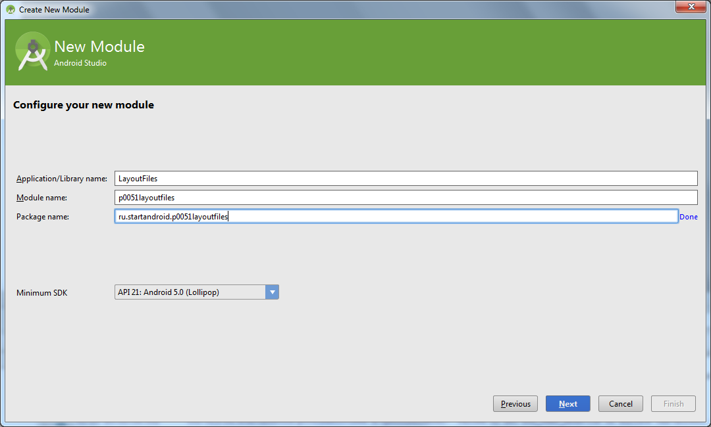
Также, в информации для Eclipse есть поле Create Activity. Его будем использовать при создании модуля, когда указываем имя Activity, в поле Activity Name
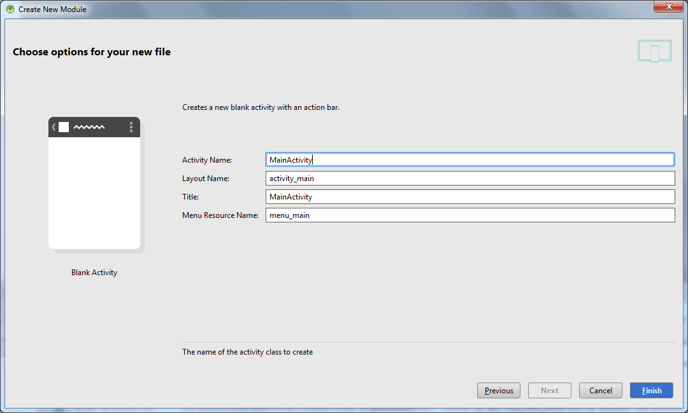
Сюда надо подставить значение из Create Activity. Обычно это всегда MainActivity.
Запомните эту инструкцию и применяйте в каждом уроке, чтобы создавать модули.
Возвращаемся к уроку.
При разработке, каждому Activity сопоставляется одноименный java-класс (наследник класса android.app.Activity). При запуске приложения, когда система должна показать Activity и в дальнейшем работать с ним, она будет вызывать методы этого класса. И от того, что мы в этих методах накодим, зависит поведение Activity.
При создании модуля мы указывали, что надо создать Activity с именем MainActivity

Мы попросили создать Activity и среда разработки создала нам соответствующий класс (в дальнейшем мы научимся их создавать самостоятельно).
Давайте посмотрим этот класс: откроем двойным кликом файл: java\ru\startandroid\p0051layoutfiles\MainActivity.java
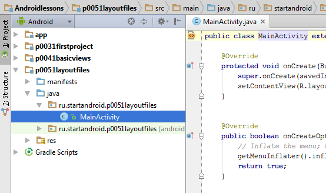
Смотрим java-код. Нас интересует метод onCreate – он вызывается, когда приложение создает и отображает Activity (на остальные методы пока не обращаем внимания). Посмотрим код реализации onCreate.
Первая строка:
super.onCreate(savedInstanceState);
это вызов метода родительского класса, выполняющий необходимые процедуры, его мы не трогаем.
Нас сейчас очень интересует следующая строка:
setContentView(R.layout.activity_main);
Метод setContentView(int) – устанавливает содержимое Activity из layout-файла. Но в качестве аргумента мы указываем не путь к layout-файлу (res/layout/activity_main.xml), а константу, которая является ID файла. Это константа генерируется автоматически в файле R.java, который мы пока трогать не будем. В этом классе будут храниться сгенерированные ID для всех ресурсов проекта (из папки res/*), чтобы мы могли к ним обращаться. Имена этих ID-констант совпадают с именами файлов ресурсов (без расширений).
Файл res/layout/activity_main.xml был создан средой разработки вместе с Activity. Его название запрашивалось на том же экране, где и название Activity (скрин выше).
Откроем двойным кликом res/layout/activity_main.xml
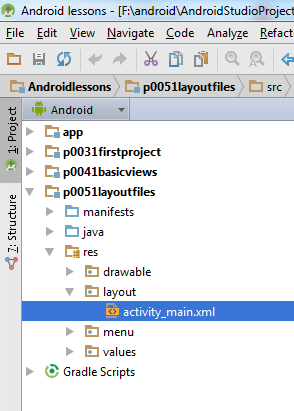
посмотрим, что там
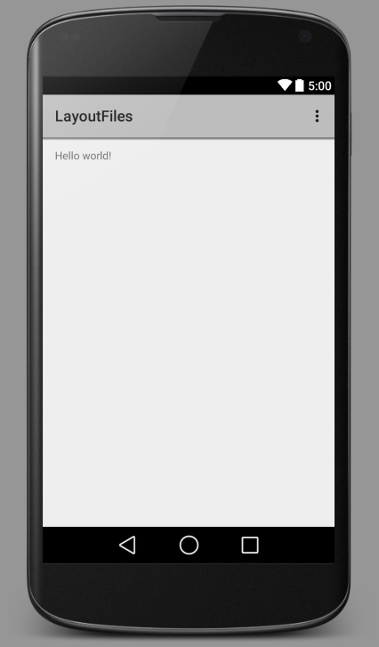
Запустим приложение и посмотрим, что оно нам покажет
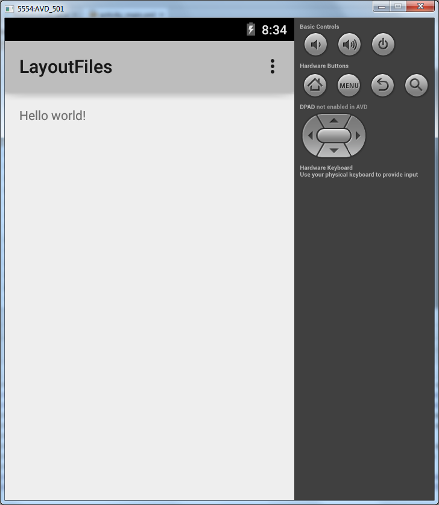
Все верно - Activity отобразил то, что прописано в activity_main.xml.
Попробуем отобразить содержимое другого файла. Создадим еще один layout-файл, например myscreen.xml. Для этого выделим папку res/layout в нашем модуле и нажмем на ней правую кнопку мыши. В появившемся меню выбираем New > Layout resource file. Для любителей горячих клавиш есть более удобный путь: при выделенной папке res/layout нажать ALT+Insert, и там уже Enter на пункте Layout resource file.
Откроется Wizard
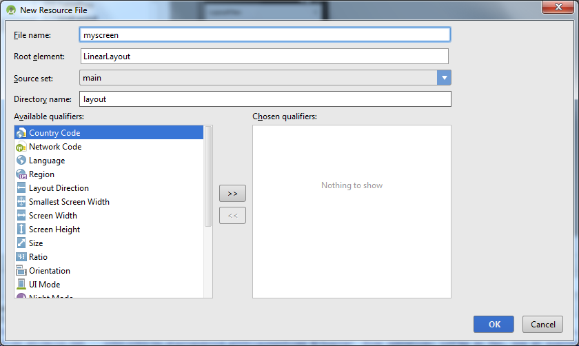
Вводим имя файла myscreen, остальное пока не меняем, жмем OK.
В папке layout должен появиться новый файл myscreen.xml
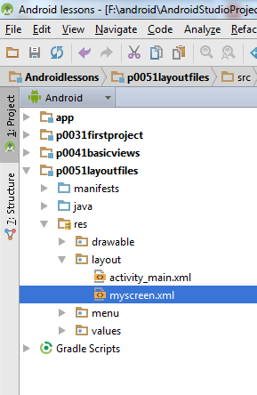
Этот новый layout-файл должен сразу открыться на редактирование. Добавим на экран элемент Plain TextView из списка слева и через Properties изменим его текст на: «new layout file myscreen for activity».
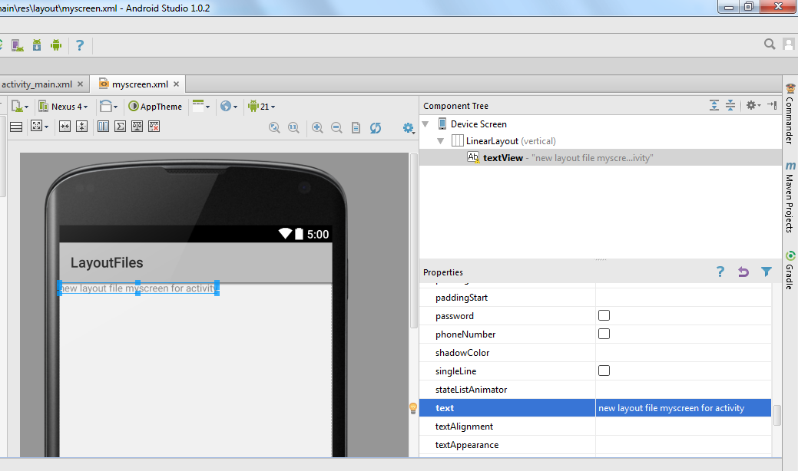
Обязательно сохраняем (CTRL+S).
При создании нового layout-файла myscreen, среда добавила в R.java новую константу для этого файла - R.layout.myscreen. И мы теперь в коде сможем через эту константу указать на этот новый layout-файл.
Настроим так, чтобы Activity использовало новый файл myscreen.xml, а не activity_main.xml, который был изначально. Откроем MainActivity.java и поменяем аргумент метода setContentView. Замените «R.layout.activity_main», на «R.layout.myscreen» (ID нового layout-файла). Должно получиться так:
@Override
protected void onCreate(Bundle savedInstanceState) {
super.onCreate(savedInstanceState);
setContentView(R.layout.myscreen);
}
Сохраняем код (CTRL+S) и запускаем приложение (SHIFT+F10).
Теперь нам предложат подтвердить, что мы хотим запустить приложение на включенном эмуляторе.
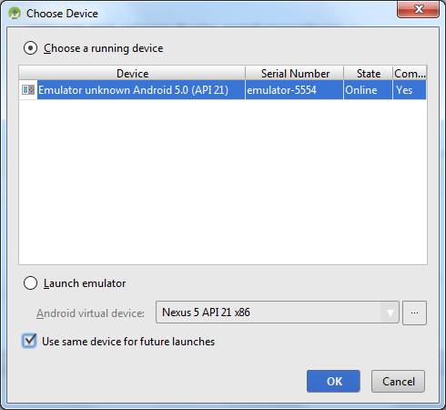
Чтобы он при каждом запуске это не спрашивал, включите галку Use same device for future launches и жмите OK.
Приложение запустилось
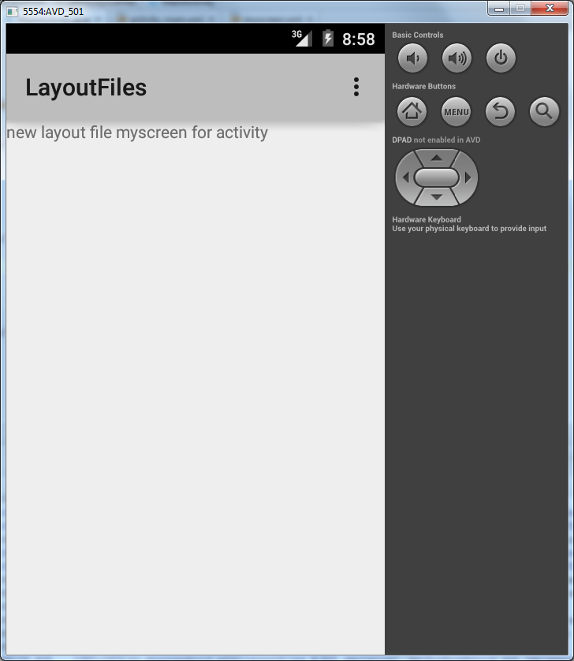
Видим, что теперь оно отображает содержимое из myscreen.xml, т.к. мы явно ему это указали в методе setContentView, который выполняется при создании (onCreate) Activity
Layout-файл в виде XML
Открыв в Android Studio layout файл activity_main или myscreen, вы видите его визуальное представление. Т.е. некий предпросмотр, как это будет выглядеть на экране. Снизу вы можете видеть две вкладки – Design и Text. Откройте вкладку Text
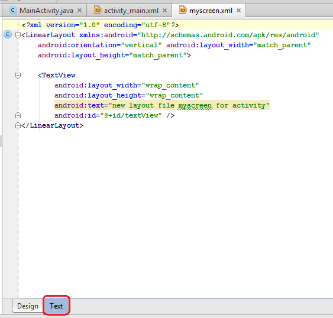
Мы видим достаточно читабельное xml-описание всех View нашего layout-файла. Названия xml-элементов - это классы View-элементов, xml-атрибуты - это параметры View-элементов, т.е. все те параметры, что мы меняем через вкладку Properties. Также вы можете вносить изменения прямо сюда и изменения будут отображаться во вкладке Design. Например, изменим текст у TextView. Вместо «new layout file myscreen for activity», напишем текст «some new text»
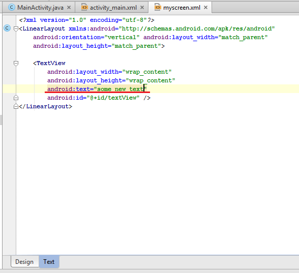
Сохраняем. Открываем Design и наблюдаем изменения.
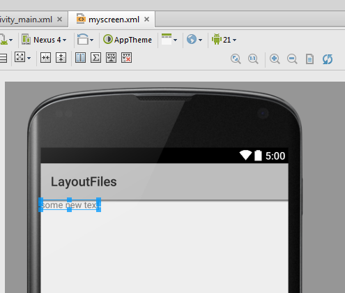
Обычно авторы учебников дают содержание layout-файлов именно в xml виде. Это удобно – вы можете просто скопировать фрагмент и использовать, и не надо вручную добавлять View-элементы, бегать по Properties и настраивать все руками. Я буду делать в своих проектах так же.
Layout-файл при смене ориентации экрана
По умолчанию мы настраиваем layout-файл под вертикальную ориентацию экрана. Но что будет если мы повернем смартфон и включится горизонтальная ориентация? Давайте смотреть.
Изменим myscreen.xml. Добавим вертикальный ряд кнопок и изменим надпись.
xml-код (вы можете скопировать его и заменить им содержимое вашего layout файла myscreen во вкладке Text):
<?xml version="1.0" encoding="utf-8"?>
<LinearLayout
xmlns:android="http://schemas.android.com/apk/res/android"
android:layout_width="match_parent"
android:layout_height="match_parent"
android:orientation="vertical">
<TextView
android:id="@+id/textView1"
android:layout_width="wrap_content"
android:layout_height="wrap_content"
android:text="Вертикальная ориентация экрана">
</TextView>
<LinearLayout
android:id="@+id/linearLayout1"
android:layout_width="match_parent"
android:layout_height="wrap_content"
android:orientation="vertical">
<Button
android:id="@+id/button1"
android:layout_width="100dp"
android:layout_height="100dp"
android:text="Button1">
</Button>
<Button
android:id="@+id/button2"
android:layout_width="100dp"
android:layout_height="100dp"
android:text="Button2">
</Button>
<Button
android:id="@+id/button3"
android:layout_width="100dp"
android:layout_height="100dp"
android:text="Button3">
</Button>
<Button
android:id="@+id/button4"
android:layout_width="100dp"
android:layout_height="100dp"
android:text="Button4">
</Button>
</LinearLayout>
</LinearLayout>Обратите внимание - я добавил вертикальный LinearLayout и поместил в него 4 кнопки. Подробнее обсудим это на следующем уроке.
Сохраним файл, запустим приложение.
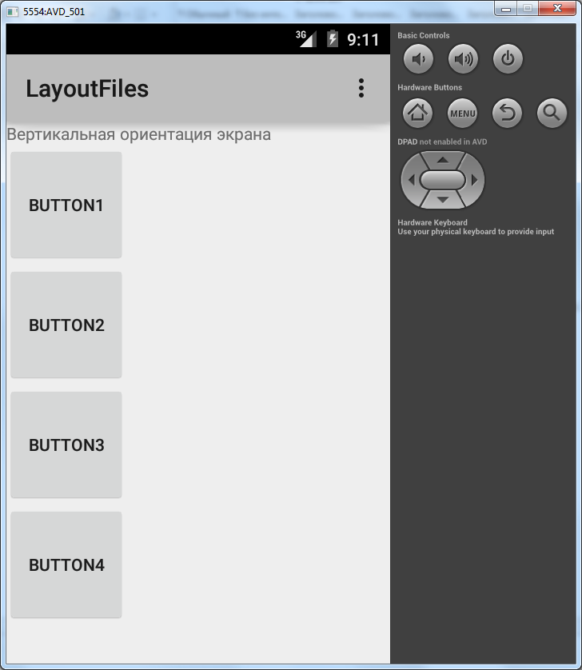
В вертикальной ориентации все ок.
Нажмем в эмуляторе CTRL+F12, ориентация сменилась на горизонтальную и наши кнопки уже не влезают в экран.
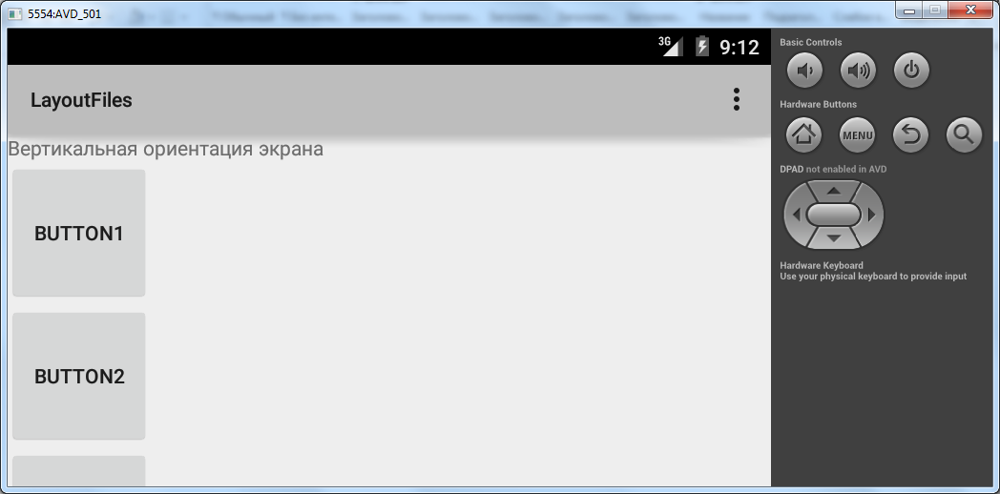
Т.е. нам необходим еще один layout-файл, который был бы заточен под горизонтальную ориентацию и в нашем случае вывел бы кнопки горизонтально.
Но как дать знать Activity, что она в вертикальной ориентации должна использовать один layout-файл, а в горизонтальной – другой? Об этом за нас уже подумали создатели Андроид. У нас есть возможность создать layout-файл, который будет использоваться приложением, когда устройство находится в горизонтальной ориентации.
Создание такого файла почти не отличается от создания обычного layout-файла. Становимся на папку res/layout и создаем новый Layout resource file. Название файла указываем то же самое: myscreen. Осталось добавить квалификатор, который даст приложению понять, что этот layout-файл надо юзать в горизонтальной ориентации. Для этого в списке квалификаторов слева снизу находим Orientation
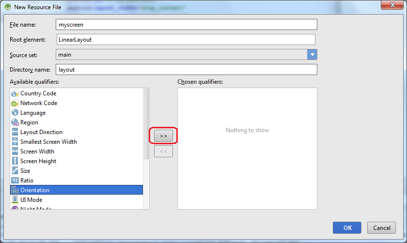
И жмем кнопку со стрелкой вправо. Тем самым мы включили использование квалификатора ориентации. Нам надо указать, что нас интересует горизонтальная ориентация: Landscape. Выберите это значение из выпадающего списка.
Обратите внимание, что изменилось значение поля Directory name
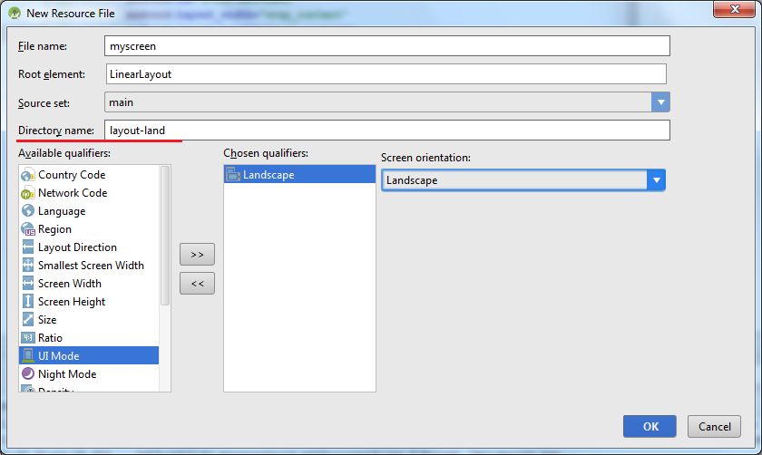
Настройкой квалификатора мы указали, что наш новый layout-файл будет создан в папке res/layout-land, а не res/layout, как обычно. Т.е. квалификатор –land указывает на то, что layout-файлы из этой папки будут использованы в горизонтальной ориентации устройства.
Жмем OK
Посмотрим на структуру модуля
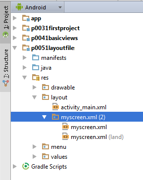
Видим, что у нас теперь два файла myscreen: обычный и land. Можно это же увидеть в структуре папок. Для этого сверху поменяйте вид проекта с Android на Project
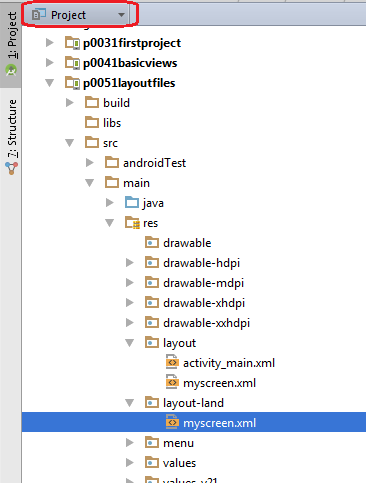
И вы увидите, что в модуле теперь есть папки res/layout и res/layout-land. И обе они содержат файл myscreen.
Откроем двойным кликом файл res/layout-land/myscreen и поменяем его содержимое на такой xml-код:
<?xml version="1.0" encoding="utf-8"?>
<LinearLayout
xmlns:android="http://schemas.android.com/apk/res/android"
android:layout_width="match_parent"
android:layout_height="match_parent"
android:orientation="vertical">
<TextView
android:id="@+id/textView1"
android:layout_width="wrap_content"
android:layout_height="wrap_content"
android:text="Горизонтальная ориентация экрана">
</TextView>
<LinearLayout
android:id="@+id/linearLayout1"
android:layout_width="match_parent"
android:layout_height="wrap_content"
android:orientation="horizontal">
<Button
android:id="@+id/button1"
android:layout_width="100dp"
android:layout_height="100dp"
android:text="Button1">
</Button>
<Button
android:id="@+id/button2"
android:layout_width="100dp"
android:layout_height="100dp"
android:text="Button2">
</Button>
<Button
android:id="@+id/button3"
android:layout_width="100dp"
android:layout_height="100dp"
android:text="Button3">
</Button>
<Button
android:id="@+id/button4"
android:layout_width="100dp"
android:layout_height="100dp"
android:text="Button4">
</Button>
</LinearLayout>
</LinearLayout>Вкладка Design покажет следующее:
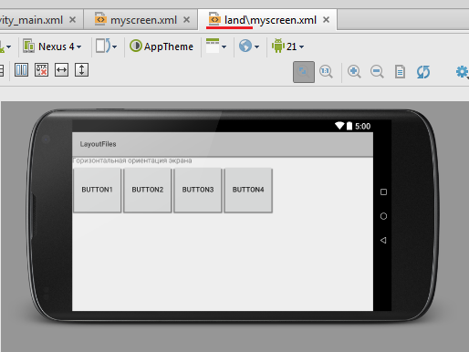
В этом layout файле мы расположили кнопки горизонтально, чтобы они адекватно отображались в горизонтальной ориентации.
Обратите внимание на название файла сверху. Там присутствует квалификатор land, чтобы вы всегда понимали какой из двух myscreen вы сейчас редактируете.
Запустим приложение.
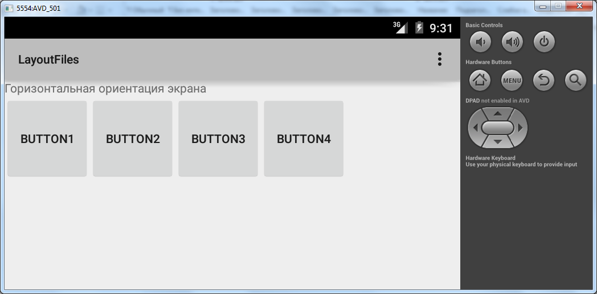
Activity читает layout-файл, который мы указывали в методе setContentView, т.е. myscreen.xml и отображает его содержимое. При этом оно учитывает ориентацию устройства, и в случае горизонтальной ориентации берет myscreen из папки res/layout-land (если он, конечно, там существует).
Переключим ориентацию CTRL+F12.
Activity понимает, что находится в вертикальной ориентации, и использует layout-файл myscreen из папки res/layout.